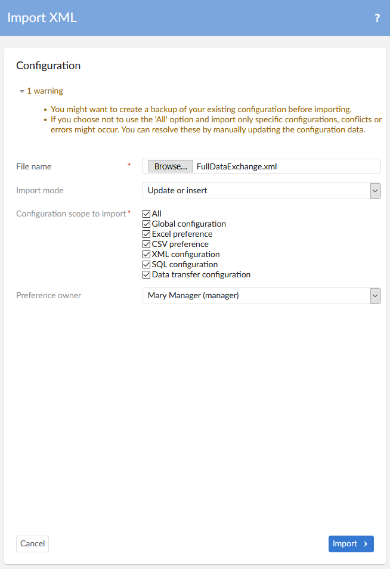

To import configuration and preference settings:
Before importing, you can create a backup of you existing configuration by performing the steps in Exporting configuration settings.
Navigate to Administration > Integration > TIBCO EBX® Data Exchange Add-on and from the dataset's Actions menu select Import XML.
On the import configuration page, specify the following:
The file to import that contains the configuration and preference data.
Optionally, choose the Replace all import mode if you want to completely overwrite existing data.
Use the checkboxes to determine the scope of the import. See the table below for information on how add-on configuration data corresponds to each option.
If you only want to include preferences owned by a specific profile, use the Preference owner menu to select this profile.

After selecting Import, the add-on displays a results page where you can select a tab corresponding to each imported table to see the results.
The following table shows how the scope options correspond to which data is imported:
Option | Data imported |
|---|---|
All | Everything in the add-on configuration dataset. |
Global configuration | All data under the Reference data and Additional configuration groups. |
Excel preference | All Excel preference settings in the Application, Semantic model, Data model, Data mapping, and Path groups. Additionally, the following tables from the Reference data group are included:
|
CSV preference | The data specific to CSV preferences from the same locations as Excel preference with the exception of the Style preference table. |
XML configuration | The data specific to XML configuration settings from the same locations as Excel preference with the exception of the Style preference table. |
SQL configuration | All SQL configuration related settings in the Application, Semantic model, Data model, Data mapping, and Path groups. Additionally, the following tables from the Reference data group are included:
|
Data transfer configuration | The data specific to data transfer configuration settings from the same locations as Excel preference with the exception of the Style preference table. |